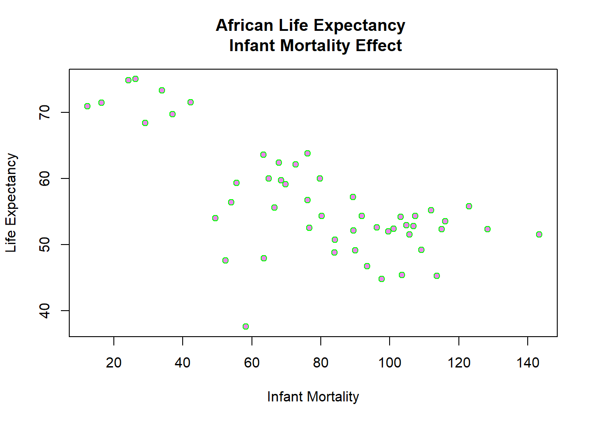

library("dplyr")
library("tidyverse")
library("ggplot2")
library("dslabs")
library("renv")R Coding Exercise
Placeholder file for the future R coding exercise.
#look at help file for gapminder data
help(gapminder)starting httpd help server ... done#get an overview of data structure
str(gapminder)'data.frame': 10545 obs. of 9 variables:
$ country : Factor w/ 185 levels "Albania","Algeria",..: 1 2 3 4 5 6 7 8 9 10 ...
$ year : int 1960 1960 1960 1960 1960 1960 1960 1960 1960 1960 ...
$ infant_mortality: num 115.4 148.2 208 NA 59.9 ...
$ life_expectancy : num 62.9 47.5 36 63 65.4 ...
$ fertility : num 6.19 7.65 7.32 4.43 3.11 4.55 4.82 3.45 2.7 5.57 ...
$ population : num 1636054 11124892 5270844 54681 20619075 ...
$ gdp : num NA 1.38e+10 NA NA 1.08e+11 ...
$ continent : Factor w/ 5 levels "Africa","Americas",..: 4 1 1 2 2 3 2 5 4 3 ...
$ region : Factor w/ 22 levels "Australia and New Zealand",..: 19 11 10 2 15 21 2 1 22 21 ...#get a summary of data
summary(gapminder) country year infant_mortality life_expectancy
Albania : 57 Min. :1960 Min. : 1.50 Min. :13.20
Algeria : 57 1st Qu.:1974 1st Qu.: 16.00 1st Qu.:57.50
Angola : 57 Median :1988 Median : 41.50 Median :67.54
Antigua and Barbuda: 57 Mean :1988 Mean : 55.31 Mean :64.81
Argentina : 57 3rd Qu.:2002 3rd Qu.: 85.10 3rd Qu.:73.00
Armenia : 57 Max. :2016 Max. :276.90 Max. :83.90
(Other) :10203 NA's :1453
fertility population gdp continent
Min. :0.840 Min. :3.124e+04 Min. :4.040e+07 Africa :2907
1st Qu.:2.200 1st Qu.:1.333e+06 1st Qu.:1.846e+09 Americas:2052
Median :3.750 Median :5.009e+06 Median :7.794e+09 Asia :2679
Mean :4.084 Mean :2.701e+07 Mean :1.480e+11 Europe :2223
3rd Qu.:6.000 3rd Qu.:1.523e+07 3rd Qu.:5.540e+10 Oceania : 684
Max. :9.220 Max. :1.376e+09 Max. :1.174e+13
NA's :187 NA's :185 NA's :2972
region
Western Asia :1026
Eastern Africa : 912
Western Africa : 912
Caribbean : 741
South America : 684
Southern Europe: 684
(Other) :5586 #determine the type of object gapminder is
class(gapminder)[1] "data.frame"africadata = filter(gapminder, continent == 'Africa')
head(africadata) country year infant_mortality life_expectancy fertility population
1 Algeria 1960 148.2 47.50 7.65 11124892
2 Angola 1960 208.0 35.98 7.32 5270844
3 Benin 1960 186.9 38.29 6.28 2431620
4 Botswana 1960 115.5 50.34 6.62 524029
5 Burkina Faso 1960 161.3 35.21 6.29 4829291
6 Burundi 1960 145.1 40.58 6.95 2786740
gdp continent region
1 13828152297 Africa Northern Africa
2 NA Africa Middle Africa
3 621797131 Africa Western Africa
4 124460933 Africa Southern Africa
5 596612183 Africa Western Africa
6 341126765 Africa Eastern AfricaTo get overview of africadata
str(africadata)'data.frame': 2907 obs. of 9 variables:
$ country : Factor w/ 185 levels "Albania","Algeria",..: 2 3 18 22 26 27 29 31 32 33 ...
$ year : int 1960 1960 1960 1960 1960 1960 1960 1960 1960 1960 ...
$ infant_mortality: num 148 208 187 116 161 ...
$ life_expectancy : num 47.5 36 38.3 50.3 35.2 ...
$ fertility : num 7.65 7.32 6.28 6.62 6.29 6.95 5.65 6.89 5.84 6.25 ...
$ population : num 11124892 5270844 2431620 524029 4829291 ...
$ gdp : num 1.38e+10 NA 6.22e+08 1.24e+08 5.97e+08 ...
$ continent : Factor w/ 5 levels "Africa","Americas",..: 1 1 1 1 1 1 1 1 1 1 ...
$ region : Factor w/ 22 levels "Australia and New Zealand",..: 11 10 20 17 20 5 10 20 10 10 ...Summary of africadata
summary(africadata) country year infant_mortality life_expectancy
Algeria : 57 Min. :1960 Min. : 11.40 Min. :13.20
Angola : 57 1st Qu.:1974 1st Qu.: 62.20 1st Qu.:48.23
Benin : 57 Median :1988 Median : 93.40 Median :53.98
Botswana : 57 Mean :1988 Mean : 95.12 Mean :54.38
Burkina Faso: 57 3rd Qu.:2002 3rd Qu.:124.70 3rd Qu.:60.10
Burundi : 57 Max. :2016 Max. :237.40 Max. :77.60
(Other) :2565 NA's :226
fertility population gdp continent
Min. :1.500 Min. : 41538 Min. :4.659e+07 Africa :2907
1st Qu.:5.160 1st Qu.: 1605232 1st Qu.:8.373e+08 Americas: 0
Median :6.160 Median : 5570982 Median :2.448e+09 Asia : 0
Mean :5.851 Mean : 12235961 Mean :9.346e+09 Europe : 0
3rd Qu.:6.860 3rd Qu.: 13888152 3rd Qu.:6.552e+09 Oceania : 0
Max. :8.450 Max. :182201962 Max. :1.935e+11
NA's :51 NA's :51 NA's :637
region
Eastern Africa :912
Western Africa :912
Middle Africa :456
Northern Africa :342
Southern Africa :285
Australia and New Zealand: 0
(Other) : 0 Infant survival rate
infant_survival_rate = africadata %>%
select(infant_mortality, life_expectancy)
head(infant_survival_rate) infant_mortality life_expectancy
1 148.2 47.50
2 208.0 35.98
3 186.9 38.29
4 115.5 50.34
5 161.3 35.21
6 145.1 40.58Structure of infant survival
str(infant_survival_rate)'data.frame': 2907 obs. of 2 variables:
$ infant_mortality: num 148 208 187 116 161 ...
$ life_expectancy : num 47.5 36 38.3 50.3 35.2 ...summary of infant survival
summary(infant_survival_rate) infant_mortality life_expectancy
Min. : 11.40 Min. :13.20
1st Qu.: 62.20 1st Qu.:48.23
Median : 93.40 Median :53.98
Mean : 95.12 Mean :54.38
3rd Qu.:124.70 3rd Qu.:60.10
Max. :237.40 Max. :77.60
NA's :226 Infant mortality
african_mortality = africadata %>%
select(population, life_expectancy)
head(african_mortality) population life_expectancy
1 11124892 47.50
2 5270844 35.98
3 2431620 38.29
4 524029 50.34
5 4829291 35.21
6 2786740 40.58African mortality structure
str(african_mortality)'data.frame': 2907 obs. of 2 variables:
$ population : num 11124892 5270844 2431620 524029 4829291 ...
$ life_expectancy: num 47.5 36 38.3 50.3 35.2 ...African mortality summary
summary(african_mortality) population life_expectancy
Min. : 41538 Min. :13.20
1st Qu.: 1605232 1st Qu.:48.23
Median : 5570982 Median :53.98
Mean : 12235961 Mean :54.38
3rd Qu.: 13888152 3rd Qu.:60.10
Max. :182201962 Max. :77.60
NA's :51 regression = lm(infant_survival_rate$life_expectancy ~ infant_survival_rate$infant_mortality)
rsq <- function(x, y) summary(lm(infant_survival_rate$life_expectancy ~ infant_survival_rate$infant_mortality))$r.squared
r_square = round(rsq(obs, mod), 3)
coeff = round(summary(regression)$coefficients[2],3)
y_int = round(summary(regression)$coefficients[1],3)
plot(
infant_survival_rate$infant_mortality,
infant_survival_rate$life_expectancy,
main='African Life Expectancy \n Infant Mortality Effect',
xlab='Infant Mortality',
ylab='Life Expectancy',
col='red',
bg='blue',
pch = 21,
)Life expectancy as a function of population
regression = lm(african_mortality$life_expectancy ~ african_mortality$population)
rsq <- function(x, y) summary(lm(african_mortality$life_expectancy ~ african_mortality$population))$r.squared
r_square = round(rsq(obs, mod), 3)
coeff = round(summary(regression)$coefficients[2],9)
y_int = round(summary(regression)$coefficients[1],3)
plot(
african_mortality$population,
african_mortality$life_expectancy,
main='African Life Expectancy \n Population Effect',
xlab='Population',
ylab='Life Expectancy',
col='pink',
bg='purple',
pch = 21,
)Missing years for infant mortality
miss_inf_mort_rows = africadata %>%
filter(is.na(infant_mortality))
head(miss_inf_mort_rows) country year infant_mortality life_expectancy fertility population
1 Cape Verde 1960 NA 50.12 6.89 202316
2 Chad 1960 NA 40.95 6.25 3002596
3 Djibouti 1960 NA 45.77 6.46 83636
4 Equatorial Guinea 1960 NA 37.69 5.51 252115
5 Eritrea 1960 NA 39.03 6.90 1407631
6 Gabon 1960 NA 38.83 4.38 499189
gdp continent region
1 NA Africa Western Africa
2 750173439 Africa Middle Africa
3 NA Africa Eastern Africa
4 NA Africa Middle Africa
5 NA Africa Eastern Africa
6 887289809 Africa Middle AfricaPerform year group by to identify missing year
miss_inf_mort_yrs = miss_inf_mort_rows %>%
group_by(year) %>%
count(infant_mortality)
miss_inf_mort_yrs# A tibble: 23 × 3
# Groups: year [23]
year infant_mortality n
<int> <dbl> <int>
1 1960 NA 10
2 1961 NA 17
3 1962 NA 16
4 1963 NA 16
5 1964 NA 15
6 1965 NA 14
7 1966 NA 13
8 1967 NA 11
9 1968 NA 11
10 1969 NA 7
# ℹ 13 more rowsExtract only year 2000 from data
africadata2000 = filter(africadata, year == 2000)
africadata2000 country year infant_mortality life_expectancy fertility
1 Algeria 2000 33.9 73.3 2.51
2 Angola 2000 128.3 52.3 6.84
3 Benin 2000 89.3 57.2 5.98
4 Botswana 2000 52.4 47.6 3.41
5 Burkina Faso 2000 96.2 52.6 6.59
6 Burundi 2000 93.4 46.7 7.06
7 Cameroon 2000 91.9 54.3 5.62
8 Cape Verde 2000 29.1 68.4 3.70
9 Central African Republic 2000 113.6 45.3 5.45
10 Chad 2000 105.7 51.5 7.35
11 Comoros 2000 72.7 62.1 5.32
12 Congo, Dem. Rep. 2000 107.4 54.3 7.09
13 Congo, Rep. 2000 76.6 52.5 5.13
14 Cote d'Ivoire 2000 99.5 52.0 5.38
15 Djibouti 2000 79.7 60.0 4.47
16 Egypt 2000 37.0 69.7 3.31
17 Equatorial Guinea 2000 104.8 52.9 5.77
18 Eritrea 2000 58.3 37.6 5.94
19 Ethiopia 2000 89.5 52.1 6.53
20 Gabon 2000 55.6 59.3 4.60
21 Gambia 2000 63.3 63.6 5.92
22 Ghana 2000 64.9 60.0 4.67
23 Guinea 2000 103.1 54.2 5.94
24 Guinea-Bissau 2000 106.9 52.8 5.85
25 Kenya 2000 66.5 55.6 5.01
26 Lesotho 2000 84.1 50.7 4.09
27 Liberia 2000 123.0 55.8 5.88
28 Libya 2000 24.2 74.8 3.05
29 Madagascar 2000 69.7 59.1 5.55
30 Malawi 2000 103.5 45.4 6.25
31 Mali 2000 116.0 53.5 6.84
32 Mauritania 2000 76.2 63.8 5.38
33 Mauritius 2000 16.4 71.4 1.99
34 Morocco 2000 42.2 71.5 2.70
35 Mozambique 2000 115.0 52.3 5.78
36 Namibia 2000 49.4 54.0 4.03
37 Niger 2000 101.1 52.4 7.73
38 Nigeria 2000 112.0 55.2 6.10
39 Rwanda 2000 109.2 49.2 5.90
40 Senegal 2000 68.5 59.7 5.56
41 Seychelles 2000 12.3 70.9 2.15
42 Sierra Leone 2000 143.3 51.5 5.92
43 South Africa 2000 54.0 56.4 2.87
44 Sudan 2000 67.8 62.4 5.44
45 Swaziland 2000 84.0 48.8 4.21
46 Tanzania 2000 80.3 54.3 5.69
47 Togo 2000 76.2 56.7 5.29
48 Tunisia 2000 26.3 75.0 2.11
49 Uganda 2000 90.0 49.1 6.87
50 Zambia 2000 97.6 44.8 6.07
51 Zimbabwe 2000 63.5 47.9 4.07
population gdp continent region
1 31183658 54790058957 Africa Northern Africa
2 15058638 9129180361 Africa Middle Africa
3 6949366 2254838685 Africa Western Africa
4 1736579 5632391130 Africa Southern Africa
5 11607944 2610945549 Africa Western Africa
6 6767073 835334807 Africa Eastern Africa
7 15927713 10075040331 Africa Middle Africa
8 438737 539227053 Africa Western Africa
9 3726048 959413051 Africa Middle Africa
10 8343321 1385050964 Africa Middle Africa
11 547696 201900820 Africa Eastern Africa
12 48048664 4305797176 Africa Middle Africa
13 3109269 3219893817 Africa Middle Africa
14 16517948 10417006096 Africa Western Africa
15 722562 551230862 Africa Eastern Africa
16 68334905 99838540997 Africa Northern Africa
17 530896 1254223037 Africa Middle Africa
18 3535156 633600000 Africa Eastern Africa
19 66443603 8179533779 Africa Eastern Africa
20 1231548 5067838984 Africa Middle Africa
21 1228863 786665264 Africa Western Africa
22 18824994 4977488790 Africa Western Africa
23 8799165 3112362568 Africa Western Africa
24 1315455 215455490 Africa Western Africa
25 31065820 12691278914 Africa Eastern Africa
26 1856225 745832990 Africa Southern Africa
27 2891968 529064647 Africa Western Africa
28 5337264 33896600871 Africa Northern Africa
29 15744811 3877575177 Africa Eastern Africa
30 11193230 1743506520 Africa Eastern Africa
31 11046926 2422469641 Africa Western Africa
32 2711421 1293653473 Africa Western Africa
33 1185143 4582562398 Africa Eastern Africa
34 28950553 37020609825 Africa Northern Africa
35 18264536 4248747769 Africa Eastern Africa
36 1897953 3908501441 Africa Southern Africa
37 11224523 1798365123 Africa Western Africa
38 122876723 45983449593 Africa Western Africa
39 8021875 1734921293 Africa Eastern Africa
40 9860578 4691828357 Africa Western Africa
41 81154 614879765 Africa Eastern Africa
42 4060709 635876870 Africa Western Africa
43 44896856 132877648091 Africa Southern Africa
44 28079664 12366140066 Africa Northern Africa
45 1063715 1524452437 Africa Southern Africa
46 33991590 10185786171 Africa Eastern Africa
47 4874735 1294243543 Africa Western Africa
48 9699192 21473261837 Africa Northern Africa
49 23757636 6193246632 Africa Eastern Africa
50 10585220 3237716325 Africa Eastern Africa
51 12499981 6689957610 Africa Eastern AfricaStructure of year 2000 data
str(africadata2000)'data.frame': 51 obs. of 9 variables:
$ country : Factor w/ 185 levels "Albania","Algeria",..: 2 3 18 22 26 27 29 31 32 33 ...
$ year : int 2000 2000 2000 2000 2000 2000 2000 2000 2000 2000 ...
$ infant_mortality: num 33.9 128.3 89.3 52.4 96.2 ...
$ life_expectancy : num 73.3 52.3 57.2 47.6 52.6 46.7 54.3 68.4 45.3 51.5 ...
$ fertility : num 2.51 6.84 5.98 3.41 6.59 7.06 5.62 3.7 5.45 7.35 ...
$ population : num 31183658 15058638 6949366 1736579 11607944 ...
$ gdp : num 5.48e+10 9.13e+09 2.25e+09 5.63e+09 2.61e+09 ...
$ continent : Factor w/ 5 levels "Africa","Americas",..: 1 1 1 1 1 1 1 1 1 1 ...
$ region : Factor w/ 22 levels "Australia and New Zealand",..: 11 10 20 17 20 5 10 20 10 10 ...Summary of yer 2000 data
summary(africadata2000) country year infant_mortality life_expectancy
Algeria : 1 Min. :2000 Min. : 12.30 Min. :37.60
Angola : 1 1st Qu.:2000 1st Qu.: 60.80 1st Qu.:51.75
Benin : 1 Median :2000 Median : 80.30 Median :54.30
Botswana : 1 Mean :2000 Mean : 78.93 Mean :56.36
Burkina Faso: 1 3rd Qu.:2000 3rd Qu.:103.30 3rd Qu.:60.00
Burundi : 1 Max. :2000 Max. :143.30 Max. :75.00
(Other) :45
fertility population gdp continent
Min. :1.990 Min. : 81154 Min. :2.019e+08 Africa :51
1st Qu.:4.150 1st Qu.: 2304687 1st Qu.:1.274e+09 Americas: 0
Median :5.550 Median : 8799165 Median :3.238e+09 Asia : 0
Mean :5.156 Mean : 15659800 Mean :1.155e+10 Europe : 0
3rd Qu.:5.960 3rd Qu.: 17391242 3rd Qu.:8.654e+09 Oceania : 0
Max. :7.730 Max. :122876723 Max. :1.329e+11
region
Eastern Africa :16
Western Africa :16
Middle Africa : 8
Northern Africa : 6
Southern Africa : 5
Australia and New Zealand: 0
(Other) : 0 To create a filter from dataset
african_mortality2000 = africadata2000 %>%
select(population, life_expectancy)
head(african_mortality2000) population life_expectancy
1 31183658 73.3
2 15058638 52.3
3 6949366 57.2
4 1736579 47.6
5 11607944 52.6
6 6767073 46.7To create another dataset
infant_survival_rate2000 = africadata2000 %>%
select(infant_mortality, life_expectancy)
head(african_mortality2000) population life_expectancy
1 31183658 73.3
2 15058638 52.3
3 6949366 57.2
4 1736579 47.6
5 11607944 52.6
6 6767073 46.7infant mortality effect
regression = lm(infant_survival_rate2000$life_expectancy ~ infant_survival_rate2000$infant_mortality)
rsq <- function(x, y) summary(lm(infant_survival_rate2000$life_expectancy ~ infant_survival_rate2000$infant_mortality))$r.squared
r_square = round(rsq(obs, mod), 3)
# summary(regression)$coefficients - keep to sanity check
coeff = round(summary(regression)$coefficients[2],3)
y_int = round(summary(regression)$coefficients[1],3)
plot(
infant_survival_rate2000$infant_mortality,
infant_survival_rate2000$life_expectancy,
main='African Life Expectancy \n Infant Mortality Effect',
xlab='Infant Mortality',
ylab='Life Expectancy',
col='green',
bg='violet',
pch = 21,
)
Population effect
regression = lm(african_mortality2000$life_expectancy ~ african_mortality2000$population)
rsq <- function(x, y) summary(lm(african_mortality2000$life_expectancy ~ african_mortality2000$population))$r.squared
r_square = round(rsq(obs, mod), 3)
# summary(regression)$coefficients - keep to sanity check
coeff = round(summary(regression)$coefficients[2],9)
y_int = round(summary(regression)$coefficients[1],3)
plot(
african_mortality2000$population,
african_mortality2000$life_expectancy,
main='African Life Expectancy \n Population Effect',
xlab='Population',
ylab='Life Expectancy',
col='violet',
bg='red',
pch = 21,
)Simple model fit
Life expectancy to infant mortality
fit1 = lm(life_expectancy ~ log(infant_mortality), data=infant_survival_rate2000)
summary(fit1)
Call:
lm(formula = life_expectancy ~ log(infant_mortality), data = infant_survival_rate2000)
Residuals:
Min 1Q Median 3Q Max
-21.079 -3.068 1.157 3.511 8.998
Coefficients:
Estimate Std. Error t value Pr(>|t|)
(Intercept) 106.765 6.681 15.981 < 2e-16 ***
log(infant_mortality) -11.827 1.556 -7.601 7.83e-10 ***
---
Signif. codes: 0 '***' 0.001 '**' 0.01 '*' 0.05 '.' 0.1 ' ' 1
Residual standard error: 5.79 on 49 degrees of freedom
Multiple R-squared: 0.5411, Adjusted R-squared: 0.5317
F-statistic: 57.77 on 1 and 49 DF, p-value: 7.827e-10The R-squared is 0.5411, this means that 54% of life expectancy can be explained by infant mortality
Fit life expectancy to population
fit2 = lm(life_expectancy ~ log(population), data=african_mortality2000)
summary(fit2)
Call:
lm(formula = life_expectancy ~ log(population), data = african_mortality2000)
Residuals:
Min 1Q Median 3Q Max
-19.113 -4.809 -1.554 3.907 18.863
Coefficients:
Estimate Std. Error t value Pr(>|t|)
(Intercept) 65.3243 12.5203 5.217 3.65e-06 ***
log(population) -0.5711 0.7943 -0.719 0.476
---
Signif. codes: 0 '***' 0.001 '**' 0.01 '*' 0.05 '.' 0.1 ' ' 1
Residual standard error: 8.502 on 49 degrees of freedom
Multiple R-squared: 0.01044, Adjusted R-squared: -0.009755
F-statistic: 0.517 on 1 and 49 DF, p-value: 0.4755The R-squared is 0.01044 which means that 1% of population can be explained by life expentancy
#Part 2 Amelia Tristan contributed to this exercise. Amelia used the mice_weight data set from dslabs.
#open help page for mice_weights data and explore the data structure, class, and contents
help(mice_weights) #help page
str(mice_weights) #structure'data.frame': 780 obs. of 7 variables:
$ body_weight : num 27.6 23 28.7 32.6 28.6 ...
$ bone_density: num 0.616 0.769 0.684 0.644 0.53 ...
$ percent_fat : num 7.26 4.95 6.02 9.54 6.99 ...
$ sex : Factor w/ 2 levels "F","M": 1 1 1 1 1 1 1 1 1 1 ...
$ diet : Factor w/ 2 levels "chow","hf": 1 1 1 1 1 1 1 1 1 1 ...
$ gen : Factor w/ 5 levels "4","7","8","9",..: 1 1 1 1 1 1 1 1 1 1 ...
$ litter : Factor w/ 2 levels "1","2": 1 1 1 1 1 1 1 1 1 1 ...summary(mice_weights) #contents body_weight bone_density percent_fat sex diet gen
Min. :18.13 Min. :0.2708 Min. : 2.552 F:398 chow:394 4 : 97
1st Qu.:28.09 1st Qu.:0.4888 1st Qu.: 5.566 M:382 hf :386 7 :195
Median :32.98 Median :0.5643 Median : 8.276 8 :193
Mean :34.08 Mean :0.5697 Mean : 8.594 9 : 97
3rd Qu.:39.37 3rd Qu.:0.6373 3rd Qu.:10.926 11:198
Max. :65.15 Max. :0.9980 Max. :22.154
NA's :4 NA's :4
litter
1:442
2:338
class(mice_weights) #class[1] "data.frame"mice_weights body_weight bone_density percent_fat sex diet gen litter
1 27.60 0.6163850 7.255468 F chow 4 1
2 23.03 0.7693496 4.951037 F chow 4 1
3 28.72 0.6842564 6.020849 F chow 4 1
4 32.57 0.6436947 9.536251 F chow 4 1
5 28.61 0.5297713 6.987331 F chow 4 1
6 28.16 0.5649217 6.767774 F chow 4 1
7 29.16 0.6616988 7.984004 F chow 4 1
8 26.48 0.5142428 7.934619 F chow 4 1
9 28.53 0.5359991 6.922964 F chow 4 1
10 30.89 0.7144773 7.312232 F chow 4 1
11 19.16 0.6254541 4.511475 F chow 4 1
12 21.84 0.5500263 5.938123 F chow 4 1
13 23.70 0.7411152 4.428054 F chow 4 1
14 22.08 0.5551574 5.920763 F chow 4 1
15 21.32 0.6013931 5.359935 F chow 4 1
16 25.05 0.5589034 5.729078 F chow 4 1
17 27.64 0.5193837 8.336167 F chow 4 1
18 30.19 0.6594427 8.425243 F chow 4 1
19 31.86 0.5045634 10.646994 F chow 4 1
20 22.92 0.6725300 4.586776 F chow 4 1
21 24.84 0.5688549 7.619640 F chow 4 1
22 25.52 0.6239913 4.150575 F chow 4 1
23 25.15 0.4693777 8.426939 F chow 4 1
24 29.51 0.4623166 9.647739 F chow 4 1
25 24.81 0.6443711 5.227341 F chow 4 1
26 23.57 0.4522034 4.479537 F chow 7 1
27 27.93 0.5962986 5.832168 F chow 7 1
28 30.08 0.4594603 7.257652 F chow 7 1
29 25.47 0.3836840 5.931445 F chow 7 1
30 19.20 0.3348764 3.575466 F chow 7 1
31 28.53 0.4320692 8.794611 F chow 7 1
32 30.36 0.6881334 4.133786 F chow 7 1
33 26.38 0.4975044 4.289243 F chow 7 1
34 26.55 0.4815078 6.529046 F chow 7 1
35 23.77 0.4489765 6.933902 F chow 7 1
36 38.41 0.5272563 11.522001 F chow 7 1
37 32.96 0.4603540 10.076159 F chow 7 1
38 26.02 0.6097897 4.061181 F chow 7 1
39 24.21 0.5546149 5.690381 F chow 7 1
40 28.62 0.5951879 5.869458 F chow 7 1
41 27.96 0.4870451 8.013083 F chow 7 1
42 30.49 0.5464572 7.843090 F chow 7 1
43 22.28 0.4742473 4.298385 F chow 7 1
44 35.19 0.6121465 7.472241 F chow 7 1
45 28.34 0.4300713 7.057669 F chow 7 1
46 25.73 0.4519949 5.965977 F chow 7 1
47 27.93 0.5601777 5.787295 F chow 7 1
48 29.49 0.4120593 8.860423 F chow 7 1
49 35.73 0.4967115 8.539618 F chow 7 1
50 26.77 0.6260935 3.180817 F chow 7 1
51 23.26 0.4311890 4.258741 F chow 7 2
52 34.06 0.6022277 8.362214 F chow 7 2
53 29.71 0.5101918 7.670117 F chow 7 2
54 28.15 0.5156155 7.922029 F chow 7 2
55 30.47 0.3803084 10.669442 F chow 7 2
56 23.28 0.5105845 5.456570 F chow 7 2
57 25.89 0.4567418 6.378380 F chow 7 2
58 20.13 0.5439827 3.057619 F chow 7 2
59 31.75 0.3862048 11.149150 F chow 7 2
60 25.57 0.3522040 10.045391 F chow 7 2
61 23.34 0.5108176 5.054165 F chow 7 2
62 21.01 0.5014798 3.403094 F chow 7 2
63 23.57 0.5088575 4.946508 F chow 7 2
64 31.19 0.4474425 10.014981 F chow 7 2
65 23.14 0.4741755 5.973631 F chow 7 2
66 25.74 0.4389420 6.937476 F chow 7 2
67 32.05 0.4887393 9.354199 F chow 7 2
68 22.97 0.5474371 5.052352 F chow 7 2
69 30.84 0.4197261 9.683313 F chow 7 2
70 29.69 0.5601070 14.645293 F chow 7 2
71 18.71 0.4676987 2.854174 F chow 7 2
72 26.81 0.5068910 6.423880 F chow 7 2
73 24.80 0.6137272 5.607904 F chow 7 2
74 25.90 0.4624997 6.198895 F chow 7 2
75 34.08 0.5302091 11.345633 F chow 7 2
76 27.96 0.3872410 9.427071 F chow 8 1
77 25.98 0.7213100 3.333658 F chow 8 1
78 32.31 0.4484742 12.328482 F chow 8 1
79 37.12 0.6208335 13.631381 F chow 8 1
80 25.96 0.6903609 3.123693 F chow 8 1
81 27.19 0.5215449 5.064809 F chow 8 1
82 29.74 0.5278612 7.568983 F chow 8 1
83 26.37 0.3677261 8.181009 F chow 8 1
84 35.08 0.5129342 10.531498 F chow 8 1
85 24.92 0.4838253 6.454523 F chow 8 1
86 28.40 0.5973696 6.217766 F chow 8 1
87 48.96 0.6043429 13.629193 F chow 8 1
88 34.78 0.4633798 10.220320 F chow 8 1
89 31.78 0.4625339 8.571172 F chow 8 1
90 28.65 0.5822841 4.753449 F chow 8 1
91 20.86 0.4351211 4.207437 F chow 8 1
92 28.49 0.6305969 3.837331 F chow 8 1
93 29.48 0.5312687 5.829013 F chow 8 1
94 27.14 0.4217566 8.571193 F chow 8 1
95 27.08 0.5848237 5.515162 F chow 8 1
96 22.57 0.5082938 3.836084 F chow 8 1
97 27.70 0.5654720 5.099283 F chow 8 1
98 26.15 0.5155432 6.295736 F chow 8 1
99 25.18 0.5365844 5.369073 F chow 8 1
100 27.33 0.7835293 4.814462 F chow 8 1
101 28.26 0.4293765 7.246414 F chow 8 2
102 31.27 0.5501901 9.023604 F chow 8 2
103 33.10 0.4586336 13.589635 F chow 8 2
104 35.45 0.4429900 11.793810 F chow 8 2
105 22.12 0.3915315 4.567689 F chow 8 2
106 35.87 0.4798999 11.582772 F chow 8 2
107 30.63 0.6263737 4.759300 F chow 8 2
108 30.96 0.6916406 6.362736 F chow 8 2
109 23.11 0.4204155 4.804379 F chow 8 2
110 34.16 0.5912600 10.809503 F chow 8 2
111 18.28 0.3097717 5.037467 F chow 8 2
112 29.12 0.4795378 8.999712 F chow 8 2
113 18.78 0.3554516 4.214797 F chow 8 2
114 26.15 0.3792791 9.900976 F chow 8 2
115 21.14 0.4432730 5.748824 F chow 8 2
116 24.63 0.4986398 6.303916 F chow 8 2
117 28.87 0.7589253 4.725538 F chow 8 2
118 24.24 0.5489208 4.529584 F chow 8 2
119 26.74 0.6003606 4.604293 F chow 8 2
120 28.75 0.4764352 9.265920 F chow 8 2
121 29.87 0.8028513 5.615113 F chow 8 2
122 26.32 0.5750478 4.525054 F chow 8 2
123 21.52 0.5398341 4.324361 F chow 8 2
124 19.42 0.3928275 4.060632 F chow 8 2
125 20.55 0.5178370 4.607527 F chow 8 2
126 28.04 0.4930090 6.890695 F chow 9 1
127 33.96 0.7524616 4.850705 F chow 9 1
128 24.85 0.4831268 4.717164 F chow 9 1
129 24.84 0.4879846 5.160626 F chow 9 1
130 23.80 0.6091361 4.037226 F chow 9 1
131 21.84 0.5309287 2.839727 F chow 9 1
132 27.21 0.4511757 3.324179 F chow 9 1
133 22.93 0.4005840 5.136191 F chow 9 1
134 39.52 0.5878198 9.960584 F chow 9 1
135 26.88 0.5132615 5.432208 F chow 9 1
136 22.89 0.6293626 3.252066 F chow 9 1
137 25.90 0.4081161 7.424778 F chow 9 1
138 25.69 0.4839708 5.825479 F chow 9 1
139 26.12 0.5819887 5.070218 F chow 9 1
140 32.12 0.7213044 6.755547 F chow 9 1
141 24.22 0.5210252 4.522086 F chow 9 1
142 28.52 0.4637815 7.475093 F chow 9 1
143 31.21 0.6119007 6.001807 F chow 9 1
144 24.28 0.6021625 3.937525 F chow 9 1
145 36.71 0.6435668 9.838195 F chow 9 1
146 37.18 0.4888361 11.475527 F chow 9 1
147 22.73 0.5769124 3.807683 F chow 9 1
148 34.73 0.5365265 9.803733 F chow 9 1
149 27.27 0.5271607 6.993909 F chow 9 1
150 24.71 0.6271212 3.773547 F chow 9 1
151 23.88 0.4835726 4.439761 F chow 11 1
152 27.07 0.4428226 7.955606 F chow 11 1
153 22.37 0.7423121 2.765785 F chow 11 1
154 26.00 0.7376226 3.587229 F chow 11 1
155 29.14 0.5666247 6.378388 F chow 11 1
156 27.75 0.6478794 5.019821 F chow 11 1
157 21.35 0.4137302 6.008845 F chow 11 1
158 22.63 0.5712425 3.313798 F chow 11 1
159 30.65 0.4564834 8.969713 F chow 11 1
160 23.62 0.3180739 6.648626 F chow 11 1
161 26.19 0.4915647 7.237852 F chow 11 1
162 33.39 0.5000142 11.017219 F chow 11 1
163 39.79 0.5476406 14.276555 F chow 11 1
164 31.06 0.4643144 9.150929 F chow 11 1
165 35.97 0.6243706 10.439691 F chow 11 1
166 37.47 0.4936475 11.421395 F chow 11 1
167 25.35 0.3550908 9.158571 F chow 11 1
168 33.87 0.5409362 9.894050 F chow 11 1
169 29.25 0.6496376 7.471405 F chow 11 1
170 25.98 0.5195610 6.550830 F chow 11 1
171 21.02 0.4870278 4.103390 F chow 11 1
172 32.50 0.4533731 10.247712 F chow 11 1
173 23.50 0.4430728 5.231759 F chow 11 1
174 35.17 0.5325864 6.575851 F chow 11 1
175 29.28 0.4615445 8.393318 F chow 11 1
176 27.99 0.4474149 7.837404 F chow 11 2
177 24.35 0.5537441 4.889521 F chow 11 2
178 30.69 0.4136720 8.402476 F chow 11 2
179 27.85 0.5541371 6.143359 F chow 11 2
180 25.18 0.6327898 4.533347 F chow 11 2
181 22.81 0.6268461 3.698261 F chow 11 2
182 32.33 0.4531320 10.596217 F chow 11 2
183 29.38 0.6286016 6.034592 F chow 11 2
184 38.77 0.5822433 11.653718 F chow 11 2
185 33.88 0.5581700 9.753173 F chow 11 2
186 30.09 0.5296013 7.809996 F chow 11 2
187 23.42 0.7534986 3.814402 F chow 11 2
188 26.71 0.6743639 4.865807 F chow 11 2
189 32.50 0.5606744 10.005445 F chow 11 2
190 29.53 0.7354373 6.211351 F chow 11 2
191 28.69 0.5592686 6.326145 F chow 11 2
192 28.92 0.6053767 6.731049 F chow 11 2
193 35.68 0.5062775 9.982676 F chow 11 2
194 27.13 0.5597812 5.460833 F chow 11 2
195 40.87 0.5776726 12.562136 F chow 11 2
196 28.70 0.5385624 5.535975 F chow 11 2
197 28.31 0.7092915 3.735535 F chow 11 2
198 29.48 0.4340300 8.349373 F chow 11 2
199 21.97 0.3574281 6.047334 F chow 11 2
200 24.18 0.5984447 3.999778 F chow 11 2
201 46.96 0.8422064 9.347382 M chow 4 1
202 31.13 0.6111998 6.975539 M chow 4 1
203 37.23 0.6727096 7.576436 M chow 4 1
204 27.01 0.5779432 5.445223 M chow 4 1
205 36.13 0.7266646 5.942395 M chow 4 1
206 31.08 0.7906264 4.659415 M chow 4 1
207 44.92 0.7467643 8.760676 M chow 4 1
208 34.12 0.8699289 5.193458 M chow 4 1
209 34.87 0.9678787 4.488289 M chow 4 1
210 28.69 0.8539888 4.115828 M chow 4 1
211 34.77 0.5532298 10.756896 M chow 4 1
212 37.66 0.6697955 7.996965 M chow 4 1
213 39.75 0.6261557 9.590817 M chow 4 1
214 35.23 0.6113271 6.486094 M chow 4 1
215 45.57 0.5642464 9.741489 M chow 4 1
216 37.04 0.6589865 7.425265 M chow 4 1
217 37.35 0.4920937 10.522354 M chow 4 1
218 35.02 0.5905549 8.436577 M chow 4 1
219 28.67 0.6111161 5.654351 M chow 4 1
220 39.95 0.9086910 5.630162 M chow 4 1
221 39.04 0.7396796 8.751921 M chow 4 1
222 32.96 0.6806490 5.971845 M chow 4 1
223 31.51 0.8565056 4.922635 M chow 4 1
224 31.09 0.5713592 6.430937 M chow 4 1
225 37.19 0.6879323 8.325083 M chow 4 1
226 33.93 0.5393047 4.809405 M chow 7 1
227 36.13 0.5922721 4.672429 M chow 7 1
228 33.79 0.5619828 4.526771 M chow 7 1
229 31.85 0.6782195 2.759431 M chow 7 1
230 29.33 0.5506595 4.275731 M chow 7 1
231 46.87 0.5737750 12.855234 M chow 7 1
232 40.87 0.4628998 15.120254 M chow 7 1
233 42.52 0.6717359 7.683165 M chow 7 1
234 36.47 0.5137134 9.478676 M chow 7 1
235 39.53 0.6188471 7.683977 M chow 7 1
236 32.44 0.5490999 4.839851 M chow 7 1
237 27.78 0.5583725 2.832056 M chow 7 1
238 31.56 0.7638562 3.265031 M chow 7 1
239 34.90 0.5427565 6.367791 M chow 7 1
240 30.88 0.5389778 5.554905 M chow 7 1
241 37.32 0.7344123 5.729115 M chow 7 1
242 36.54 0.5780414 6.848563 M chow 7 1
243 44.84 0.7135176 6.624893 M chow 7 1
244 29.30 0.7065738 3.241825 M chow 7 1
245 45.83 0.5363258 11.535982 M chow 7 1
246 27.87 0.6507932 3.093224 M chow 7 1
247 36.95 0.6626018 5.982760 M chow 7 1
248 31.96 0.6959673 2.595169 M chow 7 1
249 27.82 0.5106059 4.548970 M chow 7 1
250 33.09 0.5151109 5.703825 M chow 7 1
251 31.80 0.5960780 6.135888 M chow 7 2
252 28.55 0.5589921 4.819134 M chow 7 2
253 34.85 0.7194783 4.032062 M chow 7 2
254 30.05 0.5051342 4.852726 M chow 7 2
255 34.92 0.6263658 6.863489 M chow 7 2
256 34.83 0.5721964 5.744953 M chow 7 2
257 39.81 0.4801612 8.947393 M chow 7 2
258 32.66 0.6485466 4.496496 M chow 7 2
259 27.94 0.6756025 3.203127 M chow 7 2
260 30.63 0.5763775 6.158155 M chow 7 2
261 32.78 0.8230245 2.669386 M chow 7 2
262 39.08 0.5401460 8.526520 M chow 7 2
263 31.51 0.7245127 4.583815 M chow 7 2
264 28.49 0.5493321 4.290703 M chow 7 2
265 32.78 0.7137379 2.552403 M chow 7 2
266 31.05 0.5364699 4.943530 M chow 7 2
267 30.36 0.6024085 3.729563 M chow 7 2
268 31.52 0.5891442 4.773849 M chow 7 2
269 30.11 0.6317645 3.514629 M chow 7 2
270 27.09 0.6845312 3.143977 M chow 7 2
271 39.36 0.6647998 7.399632 M chow 7 2
272 33.76 0.6063618 5.142918 M chow 7 2
273 34.23 0.7795570 2.979089 M chow 7 2
274 29.58 0.6068908 4.016622 M chow 7 2
275 33.85 0.7544970 4.791455 M chow 8 1
276 32.24 0.6901971 3.646853 M chow 8 1
277 38.79 0.5417177 8.493150 M chow 8 1
278 33.29 0.7542064 3.555676 M chow 8 1
279 31.25 0.6322389 4.101867 M chow 8 1
280 41.41 0.5642601 10.445945 M chow 8 1
281 47.88 0.7413012 10.123964 M chow 8 1
282 29.87 0.6107160 3.730295 M chow 8 1
283 38.96 0.6265078 8.128938 M chow 8 1
284 32.93 0.6726292 3.189891 M chow 8 1
285 54.19 0.5593191 14.193821 M chow 8 1
286 38.43 0.5761923 8.726152 M chow 8 1
287 41.16 0.5813417 9.652185 M chow 8 1
288 41.22 0.5497555 10.427237 M chow 8 1
289 41.76 0.6209241 8.628801 M chow 8 1
290 35.01 0.6862062 7.590295 M chow 8 1
291 31.77 0.5520464 6.910064 M chow 8 1
292 45.69 0.5541671 12.227005 M chow 8 1
293 43.69 0.5296401 10.417223 M chow 8 1
294 42.00 0.6217057 9.205335 M chow 8 1
295 35.91 0.8093043 4.171938 M chow 8 1
296 30.07 0.6398623 5.720877 M chow 8 1
297 31.65 0.4545715 6.879177 M chow 8 2
298 29.13 0.4350061 6.909036 M chow 8 2
299 32.75 0.7255540 5.227388 M chow 8 2
300 37.83 0.6263384 8.774351 M chow 8 2
301 30.21 0.5754862 4.220553 M chow 8 2
302 30.30 0.5400077 5.900125 M chow 8 2
303 30.82 0.5156424 3.525433 M chow 8 2
304 35.24 0.5566914 7.600781 M chow 8 2
305 28.23 0.5081906 5.558316 M chow 8 2
306 23.62 0.3977376 5.176057 M chow 8 2
307 35.76 0.6070748 9.216941 M chow 8 2
308 31.54 0.4622658 9.143431 M chow 8 2
309 43.66 0.5472091 11.751905 M chow 8 2
310 34.12 0.4162632 10.461449 M chow 8 2
311 31.16 0.4786680 7.173990 M chow 8 2
312 26.38 0.4966435 4.429531 M chow 8 2
313 34.39 0.5971903 6.970577 M chow 8 2
314 39.86 0.5961614 8.718027 M chow 8 2
315 46.33 0.5875316 9.771089 M chow 8 2
316 31.25 0.4641367 8.302584 M chow 8 2
317 29.35 0.6126289 4.629298 M chow 8 2
318 39.18 0.6395900 8.774351 M chow 8 2
319 24.01 0.5013250 4.126429 M chow 8 2
320 40.89 0.6344959 8.617172 M chow 8 2
321 30.43 0.6368130 4.705845 M chow 9 1
322 35.48 0.6365770 5.617374 M chow 9 1
323 45.62 0.8291159 6.841993 M chow 9 1
324 36.91 0.6709085 6.198882 M chow 9 1
325 40.27 0.6672788 6.472033 M chow 9 1
326 35.48 0.5921929 6.432803 M chow 9 1
327 28.69 0.5443375 4.555785 M chow 9 1
328 41.46 0.6008759 8.436475 M chow 9 1
329 35.32 0.5830557 6.788699 M chow 9 1
330 47.25 0.8104933 6.878817 M chow 9 1
331 36.77 0.6590361 7.355450 M chow 9 1
332 33.04 0.6267148 4.464093 M chow 9 1
333 27.55 0.6282138 3.327790 M chow 9 1
334 48.85 0.5154748 14.494018 M chow 9 1
335 24.23 0.6025328 2.912740 M chow 9 1
336 33.99 0.5784766 6.607907 M chow 9 1
337 28.91 0.5394424 4.271345 M chow 9 1
338 36.60 0.8118818 3.433447 M chow 9 1
339 43.76 0.5978313 8.137291 M chow 9 1
340 39.36 0.5934049 8.638252 M chow 9 1
341 33.96 0.7958171 4.756177 M chow 9 1
342 27.47 0.5976982 4.279392 M chow 9 1
343 46.53 0.8421400 9.272718 M chow 9 1
344 32.86 0.4454776 9.105080 M chow 9 1
345 30.54 0.6119286 5.083053 M chow 11 1
346 42.03 0.6402051 8.189572 M chow 11 1
347 34.49 0.6628376 4.254799 M chow 11 1
348 28.57 0.5141444 5.119700 M chow 11 1
349 29.93 0.6006891 3.804286 M chow 11 1
350 32.29 0.7182986 3.163480 M chow 11 1
351 28.43 0.4871676 5.550270 M chow 11 1
352 34.52 0.7744269 4.057324 M chow 11 1
353 27.69 0.7349178 3.519013 M chow 11 1
354 43.11 0.6263009 9.986434 M chow 11 1
355 46.61 0.6995050 8.047594 M chow 11 1
356 35.28 0.8049064 4.075271 M chow 11 1
357 36.73 0.5016227 8.616300 M chow 11 1
358 33.60 0.7039518 5.863880 M chow 11 1
359 44.01 0.6024615 8.497547 M chow 11 1
360 35.30 0.5885006 7.692371 M chow 11 1
361 44.85 0.6043670 8.943331 M chow 11 1
362 48.91 0.6356125 9.857012 M chow 11 1
363 35.86 0.5722899 8.408468 M chow 11 1
364 27.19 0.5156705 5.243598 M chow 11 1
365 34.28 0.5535636 7.874634 M chow 11 1
366 34.48 0.7115525 4.539026 M chow 11 1
367 40.55 0.5954592 9.568270 M chow 11 1
368 54.73 0.8321430 9.926929 M chow 11 1
369 36.86 0.5746424 7.919502 M chow 11 1
370 31.86 0.6504287 3.982150 M chow 11 2
371 33.82 0.6990643 4.675906 M chow 11 2
372 27.99 0.6334171 3.975214 M chow 11 2
373 44.43 0.5947148 9.580098 M chow 11 2
374 33.76 0.7131673 4.720389 M chow 11 2
375 30.51 0.5749106 5.098776 M chow 11 2
376 44.46 0.4440194 11.796323 M chow 11 2
377 37.78 0.6129066 10.069350 M chow 11 2
378 30.99 0.4270255 9.080844 M chow 11 2
379 35.34 0.8000546 5.099123 M chow 11 2
380 38.28 0.9735840 4.282900 M chow 11 2
381 29.82 0.6758081 4.487535 M chow 11 2
382 32.07 0.7379309 3.652785 M chow 11 2
383 43.34 0.9980361 3.997422 M chow 11 2
384 37.19 0.7344816 5.014806 M chow 11 2
385 32.86 0.7004923 5.160785 M chow 11 2
386 41.60 0.6199465 6.956482 M chow 11 2
387 32.99 0.6703653 5.667645 M chow 11 2
388 40.63 0.5659741 8.761349 M chow 11 2
389 37.54 0.5718262 8.429571 M chow 11 2
390 32.33 0.5774217 5.028275 M chow 11 2
391 35.04 0.7390307 4.220666 M chow 11 2
392 29.15 0.5311730 4.755384 M chow 11 2
393 27.59 0.4301865 6.895794 M chow 11 2
394 34.78 0.7961320 4.377588 M chow 11 2
395 36.78 0.4791915 14.972857 F hf 4 2
396 37.65 0.5426322 14.920081 F hf 4 2
397 24.37 0.8518800 5.090817 F hf 4 2
398 21.51 0.5108683 6.222426 F hf 4 2
399 39.35 0.4558855 13.569728 F hf 4 2
400 37.57 0.4737981 14.097857 F hf 4 2
401 31.39 0.4482576 9.176294 F hf 4 2
402 49.73 0.5691473 18.615009 F hf 4 2
403 21.45 0.6752360 4.392884 F hf 4 2
404 27.47 0.3685138 10.889632 F hf 4 2
405 24.05 0.4888014 7.868612 F hf 4 2
406 23.70 0.4522095 8.062532 F hf 4 2
407 30.40 0.5143597 9.393370 F hf 4 2
408 28.72 0.6426573 6.013154 F hf 4 2
409 40.79 0.5404014 13.479010 F hf 4 2
410 40.57 0.4917382 14.499016 F hf 4 2
411 40.13 0.4956310 14.356157 F hf 4 2
412 26.87 0.5134021 8.054986 F hf 4 2
413 31.51 0.5156333 10.878812 F hf 4 2
414 32.44 0.4503678 11.428721 F hf 4 2
415 26.52 0.5050897 14.575981 F hf 4 2
416 32.18 0.4616167 13.721851 F hf 4 2
417 32.52 0.4178651 14.077239 F hf 4 2
418 26.49 0.3963328 9.862208 F hf 4 2
419 34.89 0.4540729 11.516761 F hf 4 2
420 35.31 0.4309373 11.048741 F hf 7 1
421 25.46 0.3913615 8.574490 F hf 7 1
422 38.31 0.3864866 16.187637 F hf 7 1
423 33.00 0.4106852 8.556639 F hf 7 1
424 29.91 0.6682250 16.046507 F hf 7 1
425 33.33 0.3092547 11.517836 F hf 7 1
426 40.19 0.5099173 17.292823 F hf 7 1
427 22.11 0.5407052 4.060462 F hf 7 1
428 24.00 0.3827372 6.650978 F hf 7 1
429 36.17 0.6343537 13.679263 F hf 7 1
430 33.22 0.5960025 9.842103 F hf 7 1
431 23.27 0.5515580 4.412961 F hf 7 1
432 24.16 0.4531441 6.700706 F hf 7 1
433 35.44 0.5363373 14.452939 F hf 7 1
434 29.94 0.4306204 9.066970 F hf 7 1
435 26.85 0.5081906 5.568120 F hf 7 1
436 28.64 0.5417305 7.481138 F hf 7 1
437 31.07 0.4180159 12.597300 F hf 7 1
438 34.79 0.5524192 12.744235 F hf 7 1
439 33.27 0.2707646 14.273753 F hf 7 1
440 22.63 0.5011213 4.649181 F hf 7 1
441 32.51 0.5116109 12.256458 F hf 7 1
442 38.89 0.6214238 9.242202 F hf 7 1
443 26.33 0.5016250 5.410671 F hf 7 1
444 28.05 0.3857903 9.784692 F hf 7 2
445 29.11 0.6355164 5.328522 F hf 7 2
446 35.12 0.4831941 11.815044 F hf 7 2
447 18.13 0.5537521 3.434569 F hf 7 2
448 36.39 0.5090197 9.149866 F hf 7 2
449 28.67 0.5380232 11.080986 F hf 7 2
450 26.02 0.4060777 9.014889 F hf 7 2
451 28.10 0.5108064 8.236163 F hf 7 2
452 27.84 0.5457396 7.401222 F hf 7 2
453 31.70 0.5771756 9.938308 F hf 7 2
454 26.47 0.4595108 8.495810 F hf 7 2
455 41.61 0.6397208 13.600228 F hf 7 2
456 30.42 0.4518817 10.202179 F hf 7 2
457 30.26 0.4601013 10.910607 F hf 7 2
458 20.46 0.4893250 3.695797 F hf 7 2
459 25.35 0.4675599 6.657242 F hf 7 2
460 28.56 0.4103118 8.742364 F hf 7 2
461 30.88 0.4327551 11.230833 F hf 7 2
462 23.06 0.4839239 5.220665 F hf 7 2
463 25.26 0.4501808 7.180970 F hf 7 2
464 30.50 0.5469306 8.226432 F hf 7 2
465 40.89 0.4768723 16.687755 F hf 7 2
466 37.82 0.6133873 12.554644 F hf 7 2
467 27.02 0.6636518 5.921590 F hf 7 2
468 28.96 0.3953194 12.118643 F hf 8 1
469 35.66 0.6972905 9.967599 F hf 8 1
470 26.98 0.5161154 8.111887 F hf 8 1
471 38.15 0.4562186 15.911508 F hf 8 1
472 38.65 0.4092699 14.861288 F hf 8 1
473 36.97 0.4672348 13.131061 F hf 8 1
474 28.63 0.5806423 8.209806 F hf 8 1
475 31.44 0.4684914 9.212065 F hf 8 1
476 30.66 0.4004696 10.903834 F hf 8 1
477 52.63 0.5302577 19.836967 F hf 8 1
478 33.67 0.4537242 12.526658 F hf 8 1
479 28.01 0.5852470 7.405188 F hf 8 1
480 30.69 0.4839498 11.214925 F hf 8 1
481 45.18 0.6327316 12.345783 F hf 8 1
482 30.89 0.5006004 9.488100 F hf 8 1
483 21.15 0.4766194 6.700704 F hf 8 1
484 23.16 0.5750262 4.048249 F hf 8 1
485 25.96 0.5131296 6.208077 F hf 8 1
486 24.16 0.4159714 6.152457 F hf 8 1
487 22.01 0.5901843 4.190406 F hf 8 1
488 30.24 0.4979960 9.461528 F hf 8 1
489 26.78 0.5068407 7.147674 F hf 8 1
490 34.51 0.6245325 10.821784 F hf 8 1
491 31.25 0.4751889 13.373124 F hf 8 1
492 42.15 0.5459153 18.510404 F hf 8 1
493 29.45 0.4203396 13.144116 F hf 8 2
494 20.75 0.4293577 7.703506 F hf 8 2
495 21.98 0.5718934 5.117442 F hf 8 2
496 29.37 0.6769082 8.479381 F hf 8 2
497 29.67 0.5684464 9.764790 F hf 8 2
498 29.17 0.5318935 10.046018 F hf 8 2
499 26.78 0.4510068 9.774414 F hf 8 2
500 32.06 0.4430148 14.023962 F hf 8 2
501 40.13 0.5633591 17.090807 F hf 8 2
502 29.31 0.5125794 12.289222 F hf 8 2
503 27.58 0.4662467 9.210958 F hf 8 2
504 43.05 0.7014378 15.874402 F hf 8 2
505 35.68 0.5792697 14.933506 F hf 8 2
506 30.12 0.4720496 11.084323 F hf 8 2
507 25.17 0.4998734 5.428394 F hf 8 2
508 21.78 0.4416614 5.282831 F hf 8 2
509 26.63 0.4806286 8.844649 F hf 8 2
510 24.67 0.3588992 10.118731 F hf 8 2
511 24.03 0.3620492 10.892672 F hf 8 2
512 19.11 0.3502319 6.183302 F hf 8 2
513 40.22 0.5122950 17.358619 F hf 8 2
514 30.03 0.5850403 8.244955 F hf 8 2
515 37.98 NA NA F hf 8 2
516 39.62 0.5343270 16.410095 F hf 8 2
517 27.88 0.4339696 14.759346 F hf 8 2
518 48.45 0.5683520 16.761690 F hf 9 1
519 31.03 0.4326682 10.332736 F hf 9 1
520 24.20 0.5803786 5.657671 F hf 9 1
521 26.40 0.6481146 6.886099 F hf 9 1
522 33.80 0.4430944 14.049729 F hf 9 1
523 30.18 0.5189120 7.951201 F hf 9 1
524 33.74 0.5183169 13.664379 F hf 9 1
525 34.84 0.3795786 9.625234 F hf 9 1
526 26.76 0.4403390 9.008581 F hf 9 1
527 26.81 0.4958401 12.447572 F hf 9 1
528 34.74 0.4440180 13.232726 F hf 9 1
529 43.38 0.5638588 18.061429 F hf 9 1
530 30.91 0.6264599 7.780825 F hf 9 1
531 32.61 0.2960922 14.877347 F hf 9 1
532 29.90 0.6098461 6.262313 F hf 9 1
533 27.12 0.5680498 8.041453 F hf 9 1
534 53.09 0.8144595 15.271819 F hf 9 1
535 31.97 0.5168427 11.133854 F hf 9 1
536 28.69 0.4924638 7.719934 F hf 9 1
537 29.94 0.3869557 10.960064 F hf 9 1
538 24.66 0.5928887 5.078171 F hf 9 1
539 27.55 0.4625283 8.627423 F hf 9 1
540 22.58 0.4814556 5.858490 F hf 9 1
541 65.15 0.6271248 22.153527 F hf 9 1
542 34.47 0.5030213 13.313508 F hf 9 1
543 35.71 0.6219957 10.249940 F hf 11 1
544 37.07 0.5074155 13.423188 F hf 11 1
545 27.80 0.6944491 5.182845 F hf 11 1
546 23.92 0.3665140 10.916940 F hf 11 1
547 41.75 0.5988272 15.472837 F hf 11 1
548 36.91 0.3935475 15.300186 F hf 11 1
549 28.38 0.3982388 8.055351 F hf 11 1
550 27.87 0.3913637 9.799300 F hf 11 1
551 41.26 0.5913349 15.522474 F hf 11 1
552 21.14 0.4891245 4.480588 F hf 11 1
553 37.98 0.5236159 15.097764 F hf 11 1
554 24.57 0.3160615 8.015289 F hf 11 1
555 33.19 0.4088551 11.961765 F hf 11 1
556 40.42 0.4574383 15.386360 F hf 11 1
557 29.56 0.4133142 9.150530 F hf 11 1
558 33.26 0.5069697 11.381120 F hf 11 1
559 37.99 0.5305946 13.130824 F hf 11 1
560 37.81 0.6900764 12.189262 F hf 11 1
561 32.17 0.4690800 13.469284 F hf 11 1
562 35.36 0.3509880 8.901083 F hf 11 1
563 34.03 0.6797212 11.085896 F hf 11 1
564 24.12 0.5258425 5.347615 F hf 11 1
565 27.20 0.6609721 5.830723 F hf 11 1
566 25.50 0.3034046 12.083395 F hf 11 1
567 36.37 0.4004156 16.127476 F hf 11 1
568 29.13 0.3711754 10.088360 F hf 11 2
569 29.63 0.3723204 10.545365 F hf 11 2
570 35.84 0.6632287 9.134248 F hf 11 2
571 49.89 0.4187838 15.836615 F hf 11 2
572 44.36 0.4748529 16.344485 F hf 11 2
573 31.76 0.6403306 7.105132 F hf 11 2
574 37.47 0.6217026 9.617248 F hf 11 2
575 25.22 0.4846312 5.910321 F hf 11 2
576 36.19 0.4603838 14.483904 F hf 11 2
577 24.19 0.5359504 5.957439 F hf 11 2
578 35.15 0.4585576 10.287642 F hf 11 2
579 48.37 0.5007017 13.809198 F hf 11 2
580 32.10 0.5566545 8.489143 F hf 11 2
581 28.77 0.4672989 7.218651 F hf 11 2
582 37.47 0.5458276 9.903274 F hf 11 2
583 42.90 0.6392744 12.318086 F hf 11 2
584 24.90 0.4918541 5.689916 F hf 11 2
585 30.32 0.4805390 9.994582 F hf 11 2
586 33.13 0.4449042 11.527886 F hf 11 2
587 20.72 0.4780603 5.444732 F hf 11 2
588 35.81 0.4813184 9.917155 F hf 11 2
589 30.42 0.4562834 10.475403 F hf 11 2
590 34.53 0.4136204 14.116862 F hf 11 2
591 36.63 0.4270131 14.505307 F hf 11 2
592 32.79 0.5015317 13.395970 F hf 11 2
593 33.67 0.5271769 9.627342 M hf 4 2
594 37.95 0.4720846 11.743011 M hf 4 2
595 41.67 0.5781099 12.547977 M hf 4 2
596 35.96 0.5169185 9.110549 M hf 4 2
597 45.50 0.4559956 13.692128 M hf 4 2
598 31.50 0.6237731 6.852263 M hf 4 2
599 49.21 0.5827445 12.604396 M hf 4 2
600 42.80 0.6679169 8.667087 M hf 4 2
601 40.60 0.5944620 11.347651 M hf 4 2
602 40.98 0.4890448 10.742711 M hf 4 2
603 46.33 0.6856548 11.759477 M hf 4 2
604 42.95 0.6383454 8.776546 M hf 4 2
605 48.61 0.5366447 12.051097 M hf 4 2
606 45.56 0.5928320 10.525746 M hf 4 2
607 46.84 0.6757206 12.588910 M hf 4 2
608 53.89 0.5781559 14.369164 M hf 4 2
609 41.89 0.5103366 15.143179 M hf 4 2
610 45.46 0.6367204 12.795827 M hf 4 2
611 33.70 0.4946576 8.563304 M hf 4 2
612 45.99 0.6454203 17.891309 M hf 4 2
613 46.89 0.6331602 9.809824 M hf 4 2
614 42.44 0.5046799 11.198073 M hf 4 2
615 32.33 0.5651886 7.617587 M hf 7 1
616 52.19 0.5999931 15.240861 M hf 7 1
617 38.84 0.5795426 11.174218 M hf 7 1
618 49.03 0.4552080 12.250519 M hf 7 1
619 58.01 0.7384632 17.620789 M hf 7 1
620 46.15 0.7069544 10.038533 M hf 7 1
621 43.56 0.5861579 12.018963 M hf 7 1
622 41.45 0.5473085 11.078114 M hf 7 1
623 36.07 0.6916024 8.851358 M hf 7 1
624 37.89 NA NA M hf 7 1
625 48.04 0.6462911 12.916183 M hf 7 1
626 30.67 0.5311443 8.695084 M hf 7 1
627 41.21 0.7941369 8.945946 M hf 7 1
628 42.94 0.8115798 9.593869 M hf 7 1
629 41.20 0.4191356 12.237421 M hf 7 1
630 51.42 0.6072221 12.216469 M hf 7 1
631 30.28 0.5830653 4.684610 M hf 7 1
632 38.09 0.6842436 8.633210 M hf 7 1
633 46.91 0.5557420 10.676100 M hf 7 1
634 41.08 0.7089663 10.718980 M hf 7 1
635 43.19 0.6959646 9.853061 M hf 7 1
636 47.08 0.7145670 12.608324 M hf 7 1
637 24.19 0.4780566 4.715495 M hf 7 1
638 34.23 0.6011765 7.005428 M hf 7 1
639 29.65 0.4553158 8.839014 M hf 7 2
640 40.87 0.5578455 5.368700 M hf 7 2
641 35.29 0.7538916 5.924237 M hf 7 2
642 39.73 0.5288558 8.546405 M hf 7 2
643 34.61 0.6103602 4.085000 M hf 7 2
644 39.21 0.7258755 5.777293 M hf 7 2
645 30.80 0.6024498 4.563982 M hf 7 2
646 46.58 0.6308865 14.912887 M hf 7 2
647 43.37 0.5312434 13.314832 M hf 7 2
648 35.48 0.6539562 5.113069 M hf 7 2
649 49.66 0.4448160 16.524851 M hf 7 2
650 43.21 NA NA M hf 7 2
651 51.87 0.6863687 19.490546 M hf 7 2
652 47.72 0.6350715 14.182063 M hf 7 2
653 36.95 0.5923002 12.828634 M hf 7 2
654 56.97 0.7630653 12.073297 M hf 7 2
655 44.56 0.5310632 12.825957 M hf 7 2
656 49.32 0.6793050 15.961174 M hf 7 2
657 43.57 0.5745345 12.811710 M hf 7 2
658 41.43 0.5819637 11.374868 M hf 7 2
659 51.23 0.4992553 13.855205 M hf 7 2
660 52.49 0.6480445 14.260694 M hf 7 2
661 34.64 0.5638451 7.851969 M hf 7 2
662 39.05 0.6565215 11.504441 M hf 7 2
663 38.79 0.5848405 9.668564 M hf 8 1
664 59.48 0.6462378 17.414257 M hf 8 1
665 44.16 0.4354087 14.404029 M hf 8 1
666 42.08 0.5218190 16.005604 M hf 8 1
667 43.09 0.5705899 13.123158 M hf 8 1
668 58.64 0.7091164 20.011494 M hf 8 1
669 33.19 0.5748064 8.409829 M hf 8 1
670 55.62 0.6422794 13.642035 M hf 8 1
671 40.37 0.5063113 14.644191 M hf 8 1
672 47.11 0.7054494 13.594880 M hf 8 1
673 57.08 0.6216992 19.906432 M hf 8 1
674 39.41 0.5965378 10.675004 M hf 8 1
675 34.58 0.5419469 8.334256 M hf 8 1
676 34.91 0.5305891 9.452314 M hf 8 1
677 61.15 0.6804202 14.188766 M hf 8 1
678 37.84 0.6448059 7.412838 M hf 8 1
679 43.56 0.6535431 10.037169 M hf 8 1
680 47.62 0.6372416 10.710193 M hf 8 1
681 46.73 0.5064043 12.892049 M hf 8 1
682 31.47 0.6904290 6.047852 M hf 8 1
683 45.28 0.5492885 10.559688 M hf 8 1
684 39.44 0.7350714 7.930600 M hf 8 1
685 32.01 0.5447388 4.399978 M hf 8 1
686 43.75 0.6294615 16.125565 M hf 8 1
687 42.16 0.5968079 11.259410 M hf 8 1
688 37.85 0.5810146 8.249245 M hf 8 2
689 32.78 0.5999964 5.945865 M hf 8 2
690 57.84 0.6373229 18.148941 M hf 8 2
691 39.22 0.4035991 12.060200 M hf 8 2
692 39.24 0.5829904 14.337305 M hf 8 2
693 39.62 0.5786735 11.671334 M hf 8 2
694 29.68 0.5625437 9.271594 M hf 8 2
695 40.85 0.5670734 10.003199 M hf 8 2
696 39.16 0.5528640 13.093305 M hf 8 2
697 35.98 0.7004704 10.454399 M hf 8 2
698 49.38 0.5835433 14.062127 M hf 8 2
699 40.32 0.5482792 14.816044 M hf 8 2
700 39.45 0.6225802 11.673302 M hf 8 2
701 40.26 0.6049711 10.953615 M hf 8 2
702 36.10 0.5639987 7.189852 M hf 8 2
703 30.25 0.5243011 6.782778 M hf 8 2
704 41.78 0.4805120 11.380579 M hf 8 2
705 43.65 0.6726879 14.206064 M hf 8 2
706 42.13 0.7591266 13.305264 M hf 8 2
707 47.19 0.8103861 12.182219 M hf 8 2
708 39.88 0.5815707 12.189806 M hf 8 2
709 36.98 0.5701659 11.700699 M hf 8 2
710 35.63 0.6604770 7.821327 M hf 9 1
711 43.75 0.7463843 10.102200 M hf 9 1
712 38.76 0.8092204 16.266865 M hf 9 1
713 36.10 0.5819288 8.477329 M hf 9 1
714 40.92 0.5715493 10.530162 M hf 9 1
715 37.53 0.6304227 8.435664 M hf 9 1
716 47.18 0.4884376 12.457874 M hf 9 1
717 44.70 0.8520423 10.871031 M hf 9 1
718 48.29 0.5853378 13.093814 M hf 9 1
719 43.03 0.6647549 10.538212 M hf 9 1
720 33.02 0.4692096 8.588812 M hf 9 1
721 39.73 0.6384918 6.817203 M hf 9 1
722 43.86 0.6743911 10.185073 M hf 9 1
723 50.96 0.7525395 10.715858 M hf 9 1
724 29.41 0.6151207 6.132404 M hf 9 1
725 46.49 0.7214477 12.633160 M hf 9 1
726 38.06 0.7693789 8.460162 M hf 9 1
727 37.34 0.7136857 4.712712 M hf 9 1
728 33.45 0.6010833 6.906610 M hf 9 1
729 30.58 0.4935884 7.862133 M hf 9 1
730 40.45 0.6624970 6.587354 M hf 9 1
731 37.67 0.5214758 8.134572 M hf 9 1
732 41.28 0.4723469 11.538046 M hf 9 1
733 37.24 0.6217061 9.014193 M hf 11 1
734 49.45 0.6028061 14.362316 M hf 11 1
735 43.01 0.6522052 11.754554 M hf 11 1
736 47.75 0.8304621 7.465701 M hf 11 1
737 40.53 0.6453468 9.838946 M hf 11 1
738 42.18 0.5549514 12.699239 M hf 11 1
739 48.58 0.6737763 14.774443 M hf 11 1
740 35.67 0.5391676 9.093001 M hf 11 1
741 33.48 0.4326338 9.838618 M hf 11 1
742 45.86 0.6787500 9.851535 M hf 11 1
743 41.85 0.7555432 8.181848 M hf 11 1
744 34.47 0.5432489 6.974893 M hf 11 1
745 46.92 0.8570040 8.052314 M hf 11 1
746 38.23 0.7672173 7.579223 M hf 11 1
747 47.93 0.6810068 15.730581 M hf 11 1
748 39.84 0.6099138 9.570148 M hf 11 1
749 53.23 0.6530814 13.563459 M hf 11 1
750 47.93 0.5545449 14.471139 M hf 11 1
751 48.67 0.6286676 13.151642 M hf 11 1
752 47.08 0.6218792 10.503203 M hf 11 1
753 29.68 0.6581797 4.896448 M hf 11 1
754 50.87 0.7392700 11.635754 M hf 11 1
755 48.36 0.6207751 11.606809 M hf 11 1
756 50.39 0.6001097 11.042107 M hf 11 1
757 38.59 0.6328820 6.956791 M hf 11 1
758 38.51 NA NA M hf 11 2
759 46.48 0.6601341 11.540973 M hf 11 2
760 44.11 0.4868195 12.242745 M hf 11 2
761 45.11 0.6583403 10.422866 M hf 11 2
762 46.49 0.6338862 10.955168 M hf 11 2
763 47.00 0.7503652 9.911324 M hf 11 2
764 31.18 0.4602421 7.740294 M hf 11 2
765 46.67 0.6776419 8.758845 M hf 11 2
766 43.45 0.6458616 8.442680 M hf 11 2
767 36.52 0.6181475 6.242606 M hf 11 2
768 31.37 0.7678059 3.811867 M hf 11 2
769 39.74 0.6667387 4.738173 M hf 11 2
770 37.47 0.7900731 5.608837 M hf 11 2
771 25.65 0.5191188 4.700886 M hf 11 2
772 41.40 0.6739622 7.803863 M hf 11 2
773 34.16 0.6973688 5.579332 M hf 11 2
774 42.91 0.6751427 8.239802 M hf 11 2
775 42.44 0.6234010 8.816695 M hf 11 2
776 48.98 0.7178035 10.870578 M hf 11 2
777 33.10 0.6073667 7.701568 M hf 11 2
778 38.61 0.7490462 5.667483 M hf 11 2
779 46.41 0.6888560 10.072536 M hf 11 2
780 49.96 0.5191285 12.910024 M hf 11 2#filtering out any null values. data is already mostly clean with just 8 null entries in the entire data set (4 each in two variables)
mw_clean <- mice_weights %>% dplyr::filter(!(is.na(bone_density)), !(is.na(percent_fat)))
#checking distribution (boxplot) of percent_fat as a predictor of body_weight by sex.
mw_clean %>% ggplot(aes(percent_fat, body_weight)) + geom_boxplot() + facet_wrap(~sex)Warning: Continuous x aesthetic
ℹ did you forget `aes(group = ...)`?#checking distribution of diet as a predictor of body_weight by sex
mw_clean %>% ggplot(aes(diet, body_weight)) + geom_boxplot() + facet_wrap(~sex)#scatter of percent_fat as a predictor of body_weight by sex.
mw_clean %>% ggplot(aes(percent_fat, body_weight)) + geom_point() + facet_wrap(~sex)#scatter of bone_density as a predictor of body_weight by sex.
mw_clean %>% ggplot(aes(bone_density, body_weight)) + geom_point() + facet_wrap(~sex)I will be focusing on body weight as the dependent variable. The first boxplot explores the distribution of body weight by percent fat by each sex. Females have more outliers than males and lower average body weight. The second boxplot explores the distribution of body weight by diet dy sex. Again females have more outliers and lower average body weight than males. However, the HF diet produces higher body weights in both sexes than chow diet. The next scatter plot shows a positive relationship between percent fat and body weight. The last plot shows a loosely clustered positive relationship between bone density and body weight.I will continue fitting two models of body weight with percent fat and bone density as the predictor.
#fitting two linear models for bodyweight by percent fat and bone density
mw_pf_bw_fit = lm(body_weight~percent_fat, data = mw_clean)
mw_bd_bw_fit = lm(body_weight~bone_density, data = mw_clean)
#summary of each model
summary(mw_pf_bw_fit)
Call:
lm(formula = body_weight ~ percent_fat, data = mw_clean)
Residuals:
Min 1Q Median 3Q Max
-16.2594 -4.7686 -0.7525 4.5298 18.9356
Coefficients:
Estimate Std. Error t value Pr(>|t|)
(Intercept) 21.51034 0.55808 38.54 <2e-16 ***
percent_fat 1.45918 0.05976 24.42 <2e-16 ***
---
Signif. codes: 0 '***' 0.001 '**' 0.01 '*' 0.05 '.' 0.1 ' ' 1
Residual standard error: 6.079 on 774 degrees of freedom
Multiple R-squared: 0.4351, Adjusted R-squared: 0.4344
F-statistic: 596.1 on 1 and 774 DF, p-value: < 2.2e-16summary(mw_bd_bw_fit)
Call:
lm(formula = body_weight ~ bone_density, data = mw_clean)
Residuals:
Min 1Q Median 3Q Max
-17.0564 -5.5995 -0.8832 5.1219 29.5985
Coefficients:
Estimate Std. Error t value Pr(>|t|)
(Intercept) 19.159 1.401 13.67 <2e-16 ***
bone_density 26.139 2.414 10.83 <2e-16 ***
---
Signif. codes: 0 '***' 0.001 '**' 0.01 '*' 0.05 '.' 0.1 ' ' 1
Residual standard error: 7.538 on 774 degrees of freedom
Multiple R-squared: 0.1316, Adjusted R-squared: 0.1305
F-statistic: 117.3 on 1 and 774 DF, p-value: < 2.2e-16The two models’ predictors both have low significance for body weight. However, based on the r-squared values, the model with percent fat is a much better fit (0.43) than the bone density model (0.13).